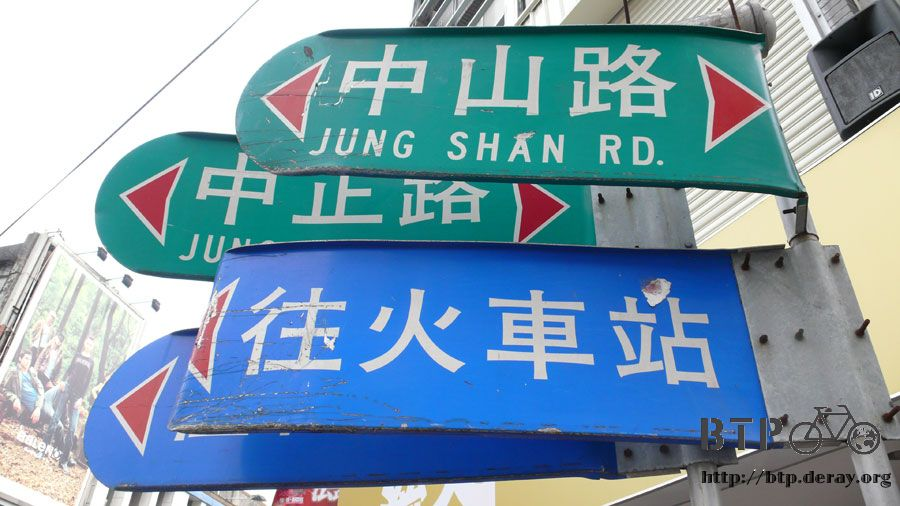
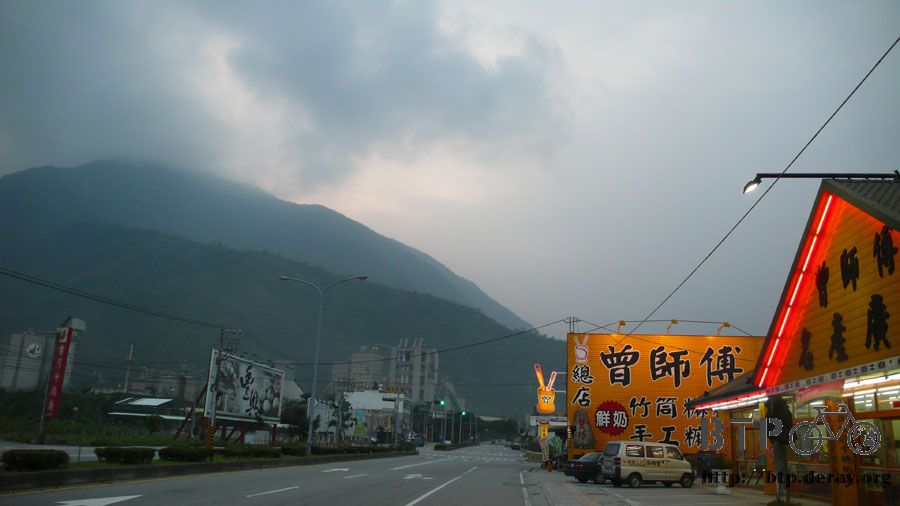
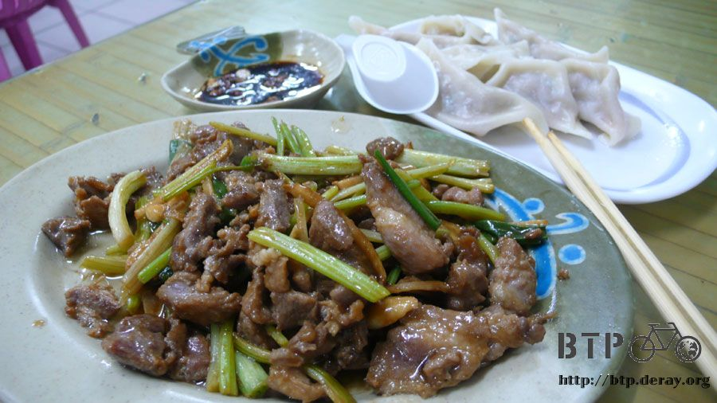

就是愛讀書
教會跟想像中的一樣安靜、舒適，星期五晚上來做禮拜的民眾大多九點左右就結束回家去。
看到我這個不速之客也沒有覺得很麻煩，只問了晚上睡覺會不會冷之類的問題？
台東、花蓮這一路上的鄉鎮，幾乎都有教會，寺廟倒不一定會有，西方的宗教在這裡比較容易被接受，看起來也都是辛苦耕耘了很多年。
這幾天不知道怎麼搞的，大概是逆風吧，好像沿路上都被壓制著，低著頭默默的騎車，連想反擊也找不到施力點，無能為力也施展不開。
睡地上如之前所說的，已經習慣了，硬梆梆的地面還是可以有辦法睡的很香甜，只是夜深的時候還是會被越來越冰冷的地面給凍醒幾次。
睡在室內有一個小小的缺點，看不到外頭天色的變化，為了怕睡過頭，所以特地調了鬧鐘在五點叫我起床。
大概第四次被冷醒的時候，鬧鐘剛好響，就在太陽還沒出來，但是天色已經微亮的清晨出發。
這次也沒帶什麼保暖的衣服，就一件無袖衣服騎車穿，一件短袖睡覺穿，清晨剛出發的時候有那麼一點點冷，但不到五分鐘後又開始流汗。
出發的時間很早，路上沒車，商店九成九都是關門的，早餐店也沒看見，倒是看到牽著大山豬在溜搭的歐巴桑。
『好...可愛喔！』拿起相機的時候我驚呼，雖然我心裡想說的是『好可口』，居然有人在溜豬耶。
歐巴桑很豪邁的說，小隻比較可愛啦，現在長大了就不可愛了。
看到這位強者歐巴桑，腦海裡不自覺的就浮現出『五四三漫畫』中的那位阿雀姨。
找不到早餐店，正想說要不要動用包包裡的乾糧時，雜貨店就出現了。
寒喧個幾句，怎麼那麼早就開～外面風好大喔～然後拿了一罐八寶粥在店門口就吃了起來。
天氣和前幾天沒有任何差異，風很大、雲層很厚，六點多勉強看到太陽的蹤影，在那雲層的遮蔽之下，只露出了一點光芒。
後來難得看見太陽的形狀，卻也隨著日出的高度上升，而被吸入雲層中，接下來一整天都只有偶爾才會出現的日光。
看來今天也不需要塗防曬油了，雖然耳朵已經曬到脫皮，但最近正好想曬黑一點，這種要曬不曬的太陽正合適。
這一根柱子應該算蠻有名的吧，要走台十一線才會看到的，北迴歸線。
看到這根柱子的時候，我心裡想的第一個念頭是，『線在哪裡？』
從正中間看，柱子是簍空的，這個縫隙想必就是北迴歸線經過的點。
補充點基本常識，北迴歸線是北緯23.5度，每年夏天的時候，太陽漸漸往北半球移動，造成日光時間增加、日曬角度也比較直，
也就是說夏天會比較熱的意思，而夏至的時候是太陽角度最靠近北半球的一天，正好是在北緯23.5度，通稱為北迴歸線。
同理，還有南迴歸線，當太陽到達那個角度的時候，就可以吃湯圓啦～
這個橋是新蓋的，舊橋在旁邊，名字我居然忘記了~_~
就是那種很好記的名字，以為聽過一次絕對就不可能忘，但還是很輕易的從腦海中給溜走。
早上出發到現在，有件事情一直很困擾著我。
在教會裡過了一夜，出發的時候就覺得後輪很軟，騎車很無力，一碰到小碎石也有很明顯壓過去的起伏感。
低頭看一下輪胎，整條已經幾乎沒有氣了，昨天騎還好好的，放了一晚上就變得沒氣，通常都是因為被刺破一個很小很小的孔，然後慢慢漏氣。
講白一點，爆胎了耶？
哇哩咧，運氣也太差了，環島也會爆胎，都已經通過屏東的折返點，只剩下不到四分之一的路程了，怎麼那麼倒楣。
我可是沒有帶任何工作跟備胎就出門了，爆胎無疑是宣告死刑。
剛出發的時候，店家都沒有開門，看到機車行也沒用。
路上的車輛超少，想攔車也沒辦法。
而且在東北季風的摧殘之下，如果順利攔到車子，我不知道自己會請司機載我去最近的車行，或是，順路的話直接載我回台北？
這次騎的車很有趣，輪胎非常的越野，就算整條胎幾乎都沒有氣了，居然還是可以騎。
只是要騎的很慢很滿，最高速大約十公里，而且下坡的時候要非常小心，不能有過大的轉彎角度，不然後輪會嚴重飄移。
雖然很頭痛，但就這麼撐著慢慢的騎，看能不能撐到機車行。
這邊只有看過機車行，沒看過腳踏車店，台東花蓮太長了，要移動的話非得靠汽機車才有效率。
所以等找到機車行的時候，還要保佑他有順便修理腳踏車的額外服務。
騎著軟趴趴的車，不知道再過多久，氣會全部漏光光？到時候就得下車用牽的了。
石梯漁港的牌子好可愛，是一隻大烏賊，做得實在太好了～
從高處鳥瞰石梯漁港，除了小港口之外還有很多艘船隻，鎮上也有許多房子，說不定會有機車行吧？
抱著一絲期望騎過去，結果全部都是海產店，大家都在賣毛蟹，喜歡吃螃蟹的人現在到東部海岸來可以吃個過癮。
但是毛蟹對我現在的處境一點幫助也沒有，看著我騎軟趴趴的車子來到，大家都提醒我說後輪沒氣了。
問了一下商店跟早餐店的老闆有沒有打氣筒？答案都是沒有，而且距離下一個鄉鎮，大家都是說『很遠捏～』
很遠也沒辦法，還是得往下騎，人定勝天的牌子給了點精神鼓舞。
偶爾從雲中露臉的太陽，灑下光束照在海面上的景色真是百看不厭。
海面上不時會有暗礁，海浪拍打到暗礁就會迸裂成白色的浪花，就再開在藍色草原中的白色小花一樣。
沿著海邊的路慢慢騎車，後面追上一輛傳統的四輪拖板車，司機老伯跟我大聲了說了一句話，但是被拖板車的吵雜聲給蓋過去。
我沒聽清楚又問了一次，原來老伯說『前面不遠就有機車行了。』
終於，從『很遠捏～』變成『就在前面』，看來這次的情形不需要攔車也可以解決。
果然很順利的找到車行，而且是營業中，老闆娘看了看車子，說沒有這個規格的內胎，當場讓我很暈眩。
還以為已經找到救命的地方，結果沒有藥可以醫。
老闆娘說，沒有新的可以換，不然用補的好了？
我說，那不如你幫我把後輪的氣給灌飽，我繼續撐著往下一個有車店的鄉鎮騎。
就這麼決定不補胎，打氣之後繼續上路，說也奇怪，打滿氣的輪胎，居然不再漏氣了，一路騎回台北，都還保持硬梆梆的狀態。

所以我也搞不懂，為什麼一夜醒來後輪會突然沒氣？是神跟我開玩笑嗎@@"
打飽氣的輪胎騎起來真是過癮，因為早上用很不好騎輪胎騎了一大段路，結果現在氣打滿了，一樣是逆風、
一樣是海岸的爬坡路，感覺就不再是難題，輕輕鬆鬆的騎，看來不只睡地上可以習慣，連惱人的東北季風吹久了，也能怡然自得。
這是我第一次走台十一線，景色和路線都非常的新奇，一直到花蓮為止，都是保持在第一次的狀態。
第一次經過這個隧道，第一次看過這個海景，第一次經過這個鄉鎮。
另一群可愛的水牛，話說路邊的動物，對於開過去的車輛都不會有反應，但是看到騎腳踏車的人，動物們都會抬起頭來觀看。
這群水牛有好幾隻可愛的鳥夥伴，白色的應該是白鷺鷥吧，大黑水牛的頭上還停了一隻黑色的鳥，嘴巴是黃色的。
看到這兩種截然不同的動物相處的那麼和諧，不由得羨幕起動物界的生活。
台東的狗，大概是全台灣最有趣的狗，每一隻，都是橫躺在路邊，看起來像屍體一樣，但大家都活的很好，只是在睡覺而已。
那睡覺的姿勢太令人感到佩服，沒看過同時有那麼多隻狗喜歡睡覺的，是東部悠哉的慢步調，連狗狗也感染了悠閒的氣氛嗎？
山景跟海景交替著出現，比較不容易膩，話說從知本出發的時候，手套就不見了，所以現在是沒有太陽眼鏡、沒有手套、
穿著拖鞋、帶一個大包包，看起來真的很不像騎車在環島的人，還好我是大人了，不然會被警察攔下來，問我是不是離家出走？

爬山路的時候看到的，照片拍起來是靜止的瞬間，但是在當時看到的是隨風搖擺的植物。

因為風，所以讓本來靜止不動的植物跳起舞來，白色的花隨風擺蕩著，好像永遠不會落地的雪花。
另一隻大水牛，牠比較可憐，沒有同伴也沒有鳥陪牠玩，當時看見覺得很大隻，照片拍起來就變小了，因為沒有比例尺的緣故。

這段路已經有不少隧道了，但新的還是繼續在施工，這個不知道要通到哪裡去？隧道裡的日光燈一直延伸，到最深處看不見盡頭。
隧道前面有一隻標準的台東睡覺狗，再說明一次，這些都是活的，要是太過靠近，牠們就會醒來，擺臭臉給你看，然後換個地方睡覺。
爬完山又回到海邊，沿著山壁建設的路很鬼斧神工，最經典的還是清水斷崖那一段。
這是沿海部分，只要空地比較廣，馬路邊可以蓋休息站的時候，都會出現的亭子。
正上方不知道為什麼沒有屋頂，但是坐在這邊很舒服，吹著超涼的海風，椅子是木頭的，又大又長可以躺著睡覺。
從這些休息亭看出去的海景也都是一等一，遠方海平面上有一個小小的陰影，看起來雖然很小，但那可是一艘超大的貨輪呢。
台東跟花蓮也沒有縣界的牌子，莫名其妙就穿越了，看到這些摩天輪、大飯店，應該就是抵達花蓮了。
這個是花蓮海洋公園，話說台灣有好多海生館，台東也有，屏東也有，海鮮店也很多，沒有吃不到的海產，四面環海的地理特色果然很不一樣。
終於快要騎進花蓮市了，這樣就可以暫時躲避季風的威力，過了這一座長長的橋樑，前面就是熱鬧的花蓮市區。
話說東部地區的空氣應該都是很好的，可是怎麼花蓮是會被壟罩在一片霧濛濛之中呢？
難道這幾年花東已經快速發展到連空氣都惡化的如此低劣了嗎？
心中帶著疑問進入花蓮市，買了點小吃果腹，花蓮市的熱鬧遠超乎我的想像。
進入市區，找了間便利商店休息片刻，花東地區的便利商店都很豪華，很大一間不講，裡面都會有廁所、用餐區。
基本上一間便利商店就是一個休息站。
趁休息的時候，終於可以補充一點水分，同時把屁股從椅子上剝離，長時間坐著，屁股都好像不是自己的一樣。
在店裡的書報雜誌區站著翻閱，看到侯文詠又出了一本新的作品，靈魂擁抱。
話說他決定不當醫生，專心從事寫作以來，作品從本來就很優秀，變得更加的洗鍊，但就不太適合小朋友看，而且厚度也是枕頭型的。
不變的是，一本書的問市都要寫上一兩年左右，距離上一本危險心靈，感覺已經是上個世紀的事情。
書沒有加上封套的緣故，就這麼站著看了起來，看著看著不知不覺就過了一個小時，從翻開第一頁就不自覺得往下看。
本來就很喜歡他的作品，那種說故事的技巧，讓人怎麼也捨不得闔起書本。
反正行李不多，包包也很空，就這麼把書給買走，打算晚上可以找個地方一口氣看完它。
花蓮十字路口的牌子長成這樣，一層疊著一層，根本看不見後面的路標在寫什麼？

聽說是被颱風給吹彎的，這風勢實在強的太誇張了。
因為路牌被吹彎，所以指的方向跟實際會到的地方是不同的喔，在修復之前，去花蓮要小心迷路。
騎進花蓮市之後，台十一線就算騎完了，可喜可賀，在東北季風的魔掌中掙扎了兩天，總算騎完了這段本來一天就可以騎完的路。
接下來又回到了台九線，距離宜蘭有122公里，想到四年前，我從宜蘭騎過來，抵達花蓮的時候已經晚上七點多。
現在反著騎回去只會更慢不會比較快，為了不想明天摸黑騎車，所以就趁著現在天色還亮，再往北騎一段路，減少明天的負擔。
花蓮有著許多的回憶，大多都是跟第一次環島時有關的，我這麼喜歡在洗手台洗澡，就是四年前騎到花蓮來，找不到地方過夜，
連學校、寺廟都不收留我，所以就找了寺廟的洗手台用毛巾擦澡，這個簡單的動作，在當時可是人生旅行中的第一次。
結果這一趟一百多天的單車旅行，所仰賴的都是這個第一次所累積的經驗，洗手台是可以讓一個人從髒兮兮變成不怎麼髒兮兮的。
這間廟就是當時不能收留我的寺廟，昨邊那一棟白色的水泥建築是廁所，彷彿可以看見，四年前漆黑的夜裡，我在這裡的身影。
這間幼稚園更是經典，這是厚著臉皮睡別人家的發源地，第一次鼓起勇氣詢問能不能讓我免費過夜，而且被神父給收留。
過了幾年重新回到這邊，外觀看起來有重新裝潢過，門口的紅色欄杆則依然不變。
那一天晚上，神父跟我說，沒有收留外人過夜的先例，我失望的要離開時，神父又拉開欄杆，說那你就當第一個過夜的例子吧。
當天我就睡在小朋友的午休房，心裡又是感激又是興奮，從這間幼稚園開始，奠定了往後住過各種地方的基礎。
不論對方的回應是友善還是冷漠，都是一種生命中的際遇，無法用言語形容的緣分。
騎到門口探頭進去看了看，小朋友好像都下課了，也沒看見老神父的身影，裡面看來沒有重新裝潢，還是那麼樣的熟悉。
經過了這兩個令人懷念的地方，勾起當年的回憶，過了這幾年，雖然一樣是騎著腳踏車到這邊來，而不是開著名貴跑車，
可是我已經不是當年那個青澀的我了，現在的我，臉皮比當年更厚，也比當年懂得珍惜生命中的美好點滴。
講古完畢，騎離花蓮市，在天黑之前能往北騎多少算多少，理想狀態是騎到蘇花公路的起點。
花蓮處處都可以看到很有原住民氣氛的東西，遇到的人也有很高比例是原住民，感覺很High的啦～這是一定要的啦～
不知道為什麼，我很喜歡拍田裡的作物，大概是因為想偷拔卻又不敢，所以就用拍照來代替。
這些很明顯也是木瓜樹，沒有用蚊帳蓋起來，大概這個木瓜種比較防蟲害吧，颱風剛走沒多久，看起來影響不是很大，大多已經結實纍纍。
前面的高山就是蘇花公路的一部分，抬頭仰望這高聳入雲的山脈，想到自己明天就要爬這麼高的山，不由得緊張的手心冒汗。

從進入花蓮市開始，空氣就很糟糕，但是也沒看見什麼工廠，這些煙霧也不像是起霧，究竟是怎麼一回事？
這個念頭一直在腦海中盤旋著，之後總算揭曉了謎題，解開這片白茫茫的原因。
就跟台中的太陽餅很出名一樣，每一家都會號稱自己是正宗、正統、元組太陽堂。
花蓮也是一樣的情形，每一家賣麻吉的，全部都是曾師父，總店、原創、老牌，整個花蓮市都是曾師父的招牌。

上次一個東河包子開兩間店，就讓我搞不清楚哪一間才是正宗的，現在全部都是曾師父麻吉。
當地人也許可以很清楚的跟你說哪一間才是最老牌的，可是觀光客哪分的清楚呀？
這樣子用複製的方式，魚目混珠的消耗好不容易才建立起來的品牌形象，對於當地的觀光並不是太好的做法，但又有誰有辦法呢？
過了這座橋之後，就算離開花蓮市了，前面就是蘇花公路的起點，大家都知道蘇花公路最多的是砂石車，因為花蓮產砂石跟水泥。
很配合的，剛好出現兩輛砂石車驗證這個說法，而這段路也是最煙霧迷濛的地方，看來離污染源已經不遠了。
經過這座藍色大橋，前面開始就要爬山，橋下是寬闊的河床，幾乎全部都乾枯，變成沙土泥塵，從海邊吹進來的大風，
不停的揚起這些塵土，然後順著強烈的風勢，一路往市區的方向吹，搞的到處都是霧濛濛的一片，這根本就是花蓮本地的沙塵暴呀。
經過這段路眼睛連睜都睜不開，風沙不停的吹進眼裡、打在肌膚裸露的地方，痛的有如針刺。
等突破這段風吹沙的路段之後，一切瞬間就停止了！
回頭一看，那捲起的沙塵繼續無止盡的往市區吹，站在上風處一點也不受影響，空氣整個變得很乾淨。
原來不是工廠或是起霧，一條乾枯的河流配上大風也能搞成這樣，還好接下來的路就不用再瞇著眼睛騎車了。
上面那條藍色護欄的路，就是蘇花的起點，因為想留在明天才騎，所以就沒有爬上去，反而繞到山腳下，想在天黑之前找到過夜的地方。
看著路燈開始點亮，心知肚明，大概再過二十分鐘就會漆黑一片，只是今天要睡哪裡依然無解。
在山腳下問了一間水泥廠，對方以廠區太髒亂為理由，委婉的拒絕了，到處晃了晃，除了蚊子越來越多之外，沒有適合的過夜處。
之後還是騎上了公路，有房子的地方比較好找到過夜的處所，天色一轉眼又黑了，沒有一天的夜空是能讓我安心的露天過夜。
也許先解決吃飯的問題會比找過夜的地點簡單很多，選一間原住民開的餐廳，點了一份水餃跟炒山豬肉。

早上看到阿雀姨牽著山豬，就很想要吃山豬，這一路上也不停的看到石板烤肉的招牌，到了晚上終於如願以償的吃到了。

水餃味道很一般，山豬肉好硬，太有嚼勁了，好像在吃肉筋還是什麼一樣，嚼到臉頰的肌肉酸痛還是嚼不爛。
吃完了晚餐，也別想就這麼睡在餐廳裡，在哈薩克也許有可能，但是～這裡是台灣(拍肩膀)。
漆黑的夜裡，二十四小時營業的加油站顯得特別明亮，旁邊還附設一間名產店。
既然是二十四小時營業，那不如就在這邊待一整晚吧，包包裡還有一本好看的書，有個地方可以棲身，好好的把書看完也是一種享受。
名產店很漂亮，跟花蓮或是台東有關，甚至是沒有關的東西，這邊都有販賣。
先去廁所洗把臉，騎了一天的車，流汗加上風沙，濕黏的汗配上海風，全身都有種不太對勁的感覺。
連廁所都很有原住民的氣息，裝飾的超可愛。
按下快門的瞬間，發現這裡是廁所，而且.....是男女廁開在一起，女廁在比較裡面。
正好有女生出來，看到我拿著相機，嚇得我連忙將相機收起來假裝鎮定，心裡默念著，我不是變態～我不是變態～
要是女生尖叫的話，今天我的過夜處大概要從加油站變成警察局，然後要不停的解釋為什麼我會在廁所裡拍照。
如果我說『因為廁所很有原住民氣息呀～』，然後警察就會丟筆。
有驚無險的走出廁所，還是覺得很恐慌，以後拿出相機拍照之前，還是衡量一下場合比較適當。
不知道有多少人跟我說過這句話，經過這次，才深深的體認到，亂拍照會帶來麻煩的，不論是有意還是無意。
盥洗完畢之後，點了一杯熱咖啡，坐在名產店裡開始閱讀下午看到第五章的書，車子就停在外面，一轉頭就能看到。
因為加油站是二十四小時營業，本來以為名產店也會跟進，但卻不是這樣，名產店十二點就打烊了，所以我在這邊看到晚上十一點半。
打工的女生已經準備收拾關店，我也不好意思久留，牽車拿著書往加油站移動，坐在有燈光的加油站裡。
大夜班只有幾個小男生，都是很可愛的原住民，問我怎麼那麼用功？
友善的跟我說晚上會很冷捏，要不要到他們裡面去睡覺？
因為我很想看書的緣故，所以笑著說不用了，只要讓我坐在這邊看書就好了，反正不騎車的時候，坐著也算一種休息，有沒有睡覺應該沒差吧？
他們還是覺得晚上會很冷，我坐在這裡不是不行，只是會冷死，然後找了一個可以擋風的亭子讓我坐在裡面，還問了我需不需要棉被？
這個小亭子就是加油站裡面那個員工結帳收銀的地方，蹲坐在裡頭，少了寒風刺骨的吹襲，果然溫暖很多。
估計看完這本厚厚的書，大概已經天亮了，事實上看到最後一頁，手機顯示是兩點四十九分。
距離天亮還有三個小時，就躺在冰冷冷的地上小睡了一會，又看完了一本超棒的書，希望侯文詠可以一直寫下去，創作更多的故事。
繼續閱讀：10.21 環遊世界的起點